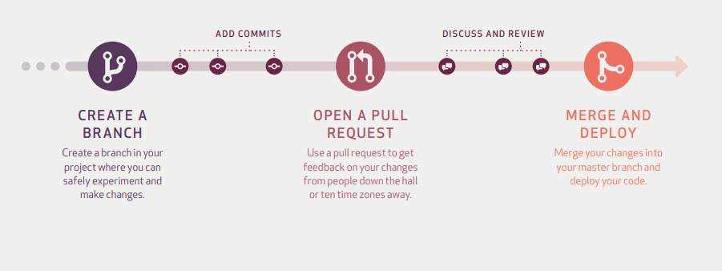

What is a Merge?
After changes haven been verified as being functional the branch can be added into the main/master branch.
Example using Git Bash of fetching and merging

This web page explains the basic aspects of the GitHub workflow.
When change is made to a branch this is called a commit. This includes adding new files, editing exisitng files and deleting files. Commits include a commit message which explains what change was made. This allows others to see and track the history of changes.
A branch is a copy of the main/master branch of the project code. This is where new features and ideas can be expreimented with without affecting the main/master branch of the code.
A Pull Request starts the discussion with other team members about the commits you have made to the branch. A Pull Request can be created at any point during development of a branch. This could be to review your work with the team or to discuss ideas about how to implement a new feature.
After a Pull Request has been opened the team can discuss and comment on the code. Code can be edited based on the feedback from the team.
After changes haven been verified as being functional the branch can be added into the main/master branch.
Example using Git Bash of fetching and merging
GitHub's Understanding the GitHub flow provides a more detailed description of the github workflow.
If you would like to try this process GitHub Learning Lab has a great interactive course Introduction to GitHub